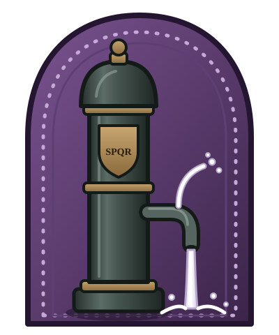

Storia e curiosità dei nasoni
Il nasone è la fontanella pubblica in ghisa che a Roma trovi quasi a ogni angolo: l’acqua è la stessa delle case, è gratuita e scorre giorno e notte.
Come nasce
I primi nasoni risalgono al 1874, quando a Roma era sindaco Luigi Pianciani. L’idea era portare acqua potabile gratuita sia in centro sia nei quartieri più lontani e, insieme, alleggerire la rete. Erano di ghisa, alti circa un metro e pesanti un centinaio di chili.
Perché si chiama «nasone»
I modelli più antichi avevano tre bocche a forma di drago. Poi sono stati sostituiti da un unico beccuccio liscio e ricurvo, il «naso», che ha dato il nome alla fontanella. Qualche esemplare con i draghi si vede ancora, per esempio in via delle Tre Cannelle e in piazza della Rotonda. Molti portano anche lo stemma con le lettere SPQR.
Il forellino: bere senza chinarsi
Vicino alla sommità del beccuccio c’è un piccolo foro. Se tappi con un dito l’uscita del naso, l’acqua sale dal forellino in un piccolo zampillo: così bevi senza piegarti e senza appoggiare la bocca al metallo.
Quanti sono
A Roma ce ne sono circa 2.500; nel solo centro storico più di duecento. Funzionano 24 ore su 24 con l’acqua che Acea distribuisce nelle case, controllata di continuo. Il flusso costante la mantiene fresca.
Le «lupe»
Non tutte le fontanelle sono nasoni. Negli anni Venti e Trenta del Novecento ne furono installate altre, di travertino, con una testa di lupa in ottone da cui esce l’acqua. Se ne contano ancora una settantina in funzione, nei parchi e al Villaggio Olimpico.
Curiosità
- Intorno al 2005 si parlò di toglierli e ci furono proteste dei romani.
- Il nasone di via dei Fienili compare nel film «C’eravamo tanto amati».
- Si dice che i nasoni siano la «democrazia dell’acqua»: tutti possono bere, a differenza di fontane monumentali come quella di Trevi.
Fonti
Informazioni raccolte da Turismo Roma e Romeing. Le misure e alcuni dettagli variano da una fonte all’altra: sono indicativi.
History and curiosities of the nasoni
The nasone is the cast-iron public drinking fountain you find on almost every corner in Rome: the water is the same as in homes, it is free and it runs day and night.
How it began
The first nasoni date from 1874, when Luigi Pianciani was mayor of Rome. The aim was to bring free drinking water to the centre and to the outer districts alike, while easing the pressure on the network. They were cast iron, about a metre tall and weighing roughly a hundred kilos.
Why “nasone”
The oldest models had three dragon-shaped spouts. These were later replaced by a single smooth, curved spout, the “nose” (naso, hence nasone, “big nose”). A few dragon examples can still be seen, for instance in Via delle Tre Cannelle and Piazza della Rotonda. Many also carry a crest with the letters SPQR.
The little hole: drinking without bending
Near the top of the spout there is a small hole. If you cover the end of the nose with a finger, the water rises from the hole in a small jet: you can drink without bending down and without touching the metal with your mouth.
How many
Rome has about 2,500 of them, more than two hundred in the historic centre alone. They run 24 hours a day with the water Acea delivers to homes, which is constantly monitored. The constant flow keeps it fresh.
The “she-wolves”
Not every fountain is a nasone. In the 1920s and 1930s others were installed, made of travertine, with a brass she-wolf’s head that the water flows from. About seventy still work, in parks and in the Olympic Village.
Curiosities
- Around 2005 there was talk of removing them, and Romans protested.
- The nasone in Via dei Fienili appears in the film C’eravamo tanto amati (“We All Loved Each Other So Much”).
- They are called a “democracy of water”: anyone can drink, unlike monumental fountains such as the Trevi.
Sources
Information gathered from Turismo Roma and Romeing. Measurements and some details differ between sources: treat them as approximate.
Histoire et anecdotes des nasoni
Le nasone est la fontaine publique en fonte que l’on trouve presque à chaque coin de rue à Rome : l’eau est la même que dans les maisons, elle est gratuite et coule jour et nuit.
Les débuts
Les premiers nasoni datent de 1874, lorsque Luigi Pianciani était maire de Rome. L’idée était d’apporter de l’eau potable gratuite au centre comme aux quartiers éloignés, tout en soulageant le réseau. Ils étaient en fonte, hauts d’environ un mètre et pesaient une centaine de kilos.
Pourquoi « nasone »
Les modèles les plus anciens avaient trois becs en forme de dragon. Ils ont ensuite été remplacés par un bec unique, lisse et recourbé, le « nez » (naso, d’où nasone, « gros nez »). On voit encore quelques exemplaires à dragons, par exemple via delle Tre Cannelle et piazza della Rotonda. Beaucoup portent aussi un blason avec les lettres SPQR.
Le petit trou : boire sans se pencher
Près du sommet du bec se trouve un petit trou. Si vous bouchez la sortie du nez avec un doigt, l’eau jaillit du petit trou : on boit sans se baisser et sans toucher le métal avec la bouche.
Combien y en a-t-il
Rome en compte environ 2 500, plus de deux cents rien que dans le centre historique. Ils fonctionnent 24 heures sur 24 avec l’eau qu’Acea distribue aux foyers, contrôlée en permanence. Le débit constant la garde fraîche.
Les « louves »
Toutes les fontaines ne sont pas des nasoni. Dans les années 1920 et 1930 on en a installé d’autres, en travertin, avec une tête de louve en laiton d’où sort l’eau. Une soixantaine fonctionnent encore, dans les parcs et au Village olympique.
Anecdotes
- Vers 2005 il a été question de les supprimer, et les Romains ont protesté.
- Le nasone de la via dei Fienili apparaît dans le film Nous nous sommes tant aimés.
- On parle de « démocratie de l’eau » : tout le monde peut boire, contrairement aux fontaines monumentales comme celle de Trevi.
Sources
Informations tirées de Turismo Roma et de Romeing. Les mesures et certains détails varient selon les sources : ils sont indicatifs.
Historia y curiosidades de los nasoni
El nasone es la fuente pública de hierro fundido que se encuentra casi en cada esquina de Roma: el agua es la misma que la de las casas, es gratuita y corre día y noche.
Cómo nació
Los primeros nasoni datan de 1874, cuando Luigi Pianciani era alcalde de Roma. La idea era llevar agua potable gratuita tanto al centro como a los barrios alejados y, a la vez, aliviar la red. Eran de hierro fundido, de aproximadamente un metro de altura y un centenar de kilos de peso.
Por qué «nasone»
Los modelos más antiguos tenían tres bocas en forma de dragón. Después se sustituyeron por un único caño liso y curvo, la «nariz» (naso, de ahí nasone, «narizón»). Todavía se ven algunos con dragones, por ejemplo en via delle Tre Cannelle y en piazza della Rotonda. Muchos llevan también un escudo con las letras SPQR.
El agujerito: beber sin agacharse
Cerca de la parte superior del caño hay un pequeño orificio. Si tapas con un dedo la salida de la nariz, el agua sube por el agujerito en un chorrito: así bebes sin agacharte y sin apoyar la boca en el metal.
Cuántos hay
Roma tiene unos 2.500, más de doscientos solo en el centro histórico. Funcionan las 24 horas con el agua que Acea distribuye a los hogares, controlada de forma continua. El flujo constante la mantiene fresca.
Las «lobas»
No todas las fuentes son nasoni. En los años veinte y treinta del siglo XX se instalaron otras, de travertino, con una cabeza de loba de latón de la que sale el agua. Unas setenta siguen funcionando, en parques y en la Villa Olímpica.
Curiosidades
- Hacia 2005 se habló de retirarlos y los romanos protestaron.
- El nasone de via dei Fienili aparece en la película Nos habíamos amado tanto.
- Se dice que son la «democracia del agua»: todos pueden beber, a diferencia de fuentes monumentales como la de Trevi.
Fuentes
Información recogida de Turismo Roma y Romeing. Las medidas y algunos detalles varían según la fuente: son orientativos.
Geschichte und Kurioses zu den Nasoni
Der Nasone ist der gusseiserne öffentliche Trinkbrunnen, den man in Rom an fast jeder Ecke findet: Das Wasser ist dasselbe wie in den Wohnungen, kostenlos und fließt Tag und Nacht.
Wie alles begann
Die ersten Nasoni stammen aus dem Jahr 1874, als Luigi Pianciani Bürgermeister von Rom war. Ziel war es, kostenloses Trinkwasser sowohl ins Zentrum als auch in die äußeren Viertel zu bringen und das Netz zu entlasten. Sie bestanden aus Gusseisen, waren etwa einen Meter hoch und wogen rund hundert Kilo.
Warum „Nasone“
Die ältesten Modelle hatten drei drachenförmige Ausläufe. Sie wurden später durch einen einzigen glatten, gebogenen Auslauf ersetzt, die „Nase“ (naso, daher nasone, „große Nase“). Einige Exemplare mit Drachen sind noch zu sehen, etwa in der Via delle Tre Cannelle und an der Piazza della Rotonda. Viele tragen außerdem ein Wappen mit den Buchstaben SPQR.
Das Löchlein: trinken ohne sich zu bücken
Nahe der Spitze des Auslaufs befindet sich ein kleines Loch. Hält man die Öffnung der Nase mit dem Finger zu, steigt das Wasser aus dem Löchlein als kleiner Strahl auf: So trinkt man, ohne sich zu bücken und ohne das Metall mit dem Mund zu berühren.
Wie viele es gibt
Rom hat etwa 2.500 davon, allein in der Altstadt mehr als zweihundert. Sie laufen rund um die Uhr mit dem Wasser, das Acea in die Haushalte liefert und das ständig kontrolliert wird. Der gleichmäßige Fluss hält es frisch.
Die „Wölfinnen“
Nicht jeder Brunnen ist ein Nasone. In den 1920er- und 1930er-Jahren wurden weitere aufgestellt, aus Travertin, mit einem Wölfinnenkopf aus Messing, aus dem das Wasser fließt. Etwa siebzig sind noch in Betrieb, in Parks und im Olympischen Dorf.
Kurioses
- Um 2005 war von einer Abschaffung die Rede, und die Römer protestierten.
- Der Nasone in der Via dei Fienili kommt im Film Wir waren so verliebt vor.
- Man nennt sie die „Demokratie des Wassers“: Jeder darf trinken, anders als an monumentalen Brunnen wie der Fontana di Trevi.
Quellen
Informationen aus Turismo Roma und Romeing. Maße und manche Einzelheiten unterscheiden sich je nach Quelle: Sie sind als Richtwerte zu verstehen.